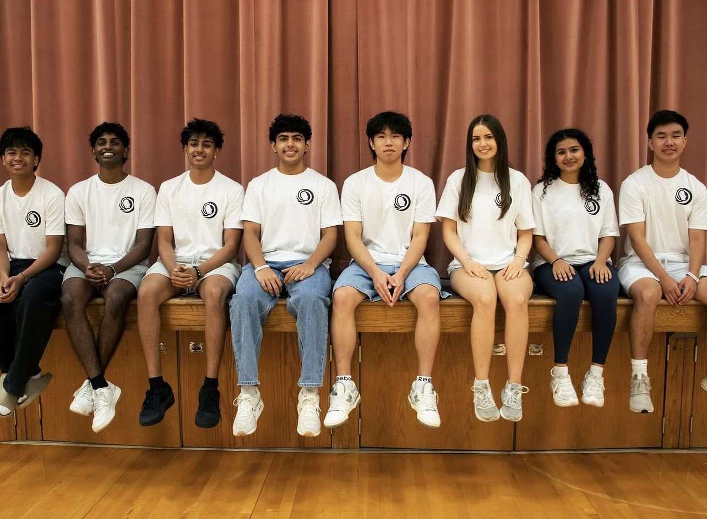
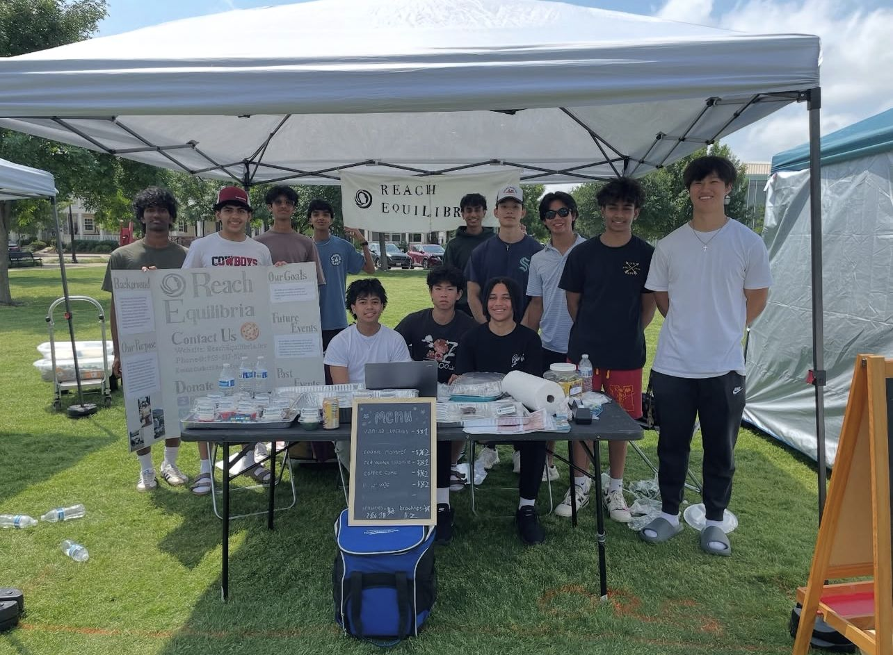

President
Leads the chapter, appoints officers, communicates with National, and ensures reports are submitted.
Weekly Focus Monthly Deliverable
Support chapter priorities as President Update President before monthly report

Chapter Resources Pack
Launch. Lead. Report. Grow.
Reaching Stability Together
Nobody is in this alone; We are here to help
Official Edition 2026
Version 1.0
Built for chapter presidents, advisors, and student leaders
This document turns the ReachEquilibria Constitution into practical tools for starting, operating, and growing a chapter. It is designed so a student leader can take action immediately without waiting for national leadership to explain every step.
This packet is the practical operating toolkit for ReachEquilibria chapters. The Constitution explains what ReachEquilibria is. This packet explains how to start and run it at the chapter level.
Presidents should use this packet during chapter launch, monthly planning, officer transitions, sponsor outreach, and event preparation. Advisors should use it to understand expectations and support student leadership without taking control of the chapter.
National alignment. Local freedom. Chapters are expected to uphold the mission, submit reports, and represent the brand professionally while adapting events and recruitment to their own community.
| Resource | Best Used For |
|---|---|
| Chapter Launch Checklist | Starting a new chapter from zero |
| First 30 Days Plan | Setting up leadership, advisor support, and first meeting |
| First 90 Days Plan | Completing first event, report, and recruitment cycle |
| Officer Role Cards | Clarifying responsibilities |
| Monthly Report Template | Submitting required data to National |
| Fundraising & Sponsorship Tools | Raising money without national funding |
| Event Playbooks | Planning service, education, advocacy, and fundraising events |
| Branding Guide | Keeping chapter communications professional |
A chapter is ready to launch when it has a committed president, required officers, an advisor, a clear school/community base, and a plan for the first meeting.
| Step | Action | Status |
|---|---|---|
| 1 | Identify chapter president | [ ] |
| 2 | Recruit five additional active members | [ ] |
| 3 | Confirm required officer team | [ ] |
| 4 | Secure faculty advisor or adult support contact | [ ] |
| 5 | Submit chapter application to National | [ ] |
| 6 | Create chapter group chat or communication channel | [ ] |
| 7 | Plan first general meeting | [ ] |
| 8 | Choose first service, education, advocacy, or fundraising project | [ ] |
| 9 | Notify National of chapter social media accounts | [ ] |
| 10 | Submit first monthly report after launch | [ ] |
A chapter should not publicly represent itself as an official ReachEquilibria chapter until National approval has been granted.
| Week | Priority | Deliverable |
|---|---|---|
| Week 1 | Build the team | President, officers, advisor, minimum members |
| Week 2 | Plan the launch | Meeting date, agenda, recruitment message |
| Week 3 | Hold first meeting | Attendance list, interest form, officer intro |
| Week 4 | Choose first initiative | Project plan and monthly report draft |
| Month | Goal | Evidence to Save |
|---|---|---|
| Month 1 | Launch chapter and recruit members | Photos, attendance, flyers |
| Month 2 | Host first initiative | Event photos, volunteer hours, funds raised |
| Month 3 | Submit complete report and plan next quarter | Report, screenshots, receipts |
The first 90 days do not need to be perfect. The goal is to prove the chapter can organize people, complete one meaningful initiative, and report accurately.
Leads the chapter, appoints officers, communicates with National, and ensures reports are submitted.
Weekly Focus Monthly Deliverable
Support chapter priorities as President Update President before monthly report
Supports the President, helps manage meetings, tracks chapter progress, and steps in when needed.
Weekly Focus Monthly Deliverable
Support chapter priorities as Vice President Update President before monthly report
Tracks funds raised, saves documentation, organizes receipts, and prepares financial reporting.
Weekly Focus Monthly Deliverable
Support chapter priorities as Treasurer Update President before monthly report
Builds relationships with schools, nonprofits, businesses, speakers, and community partners.
Weekly Focus Monthly Deliverable
Support chapter priorities as Director of Outreach Update President before monthly report
Plans fundraisers, sponsorship outreach, restaurant nights, tournaments, and donor communication.
Weekly Focus Monthly Deliverable
Support chapter priorities as Director of Fundraising Update President before monthly report
Plans volunteer opportunities, donation drives, shelter support, and direct community impact projects.
Weekly Focus Monthly Deliverable
Support chapter priorities as Director of Service Update President before monthly report
Section 1. Purpose Local chapters serve as the primary vehicle through which ReachEquilibria fulfills its mission within schools and communities. Each chapter operates under the mission, values, and standards of ReachEquilibria while maintaining flexibility to address local needs.
Section 4. Chapter Approval All chapters must receive approval from the Chief Executive Officer before receiving official recognition. No chapter may represent itself as an official ReachEquilibria chapter without approval.


ReachEquilibria Chapter Resources Pack v1.0
Ask the chatbot if you have any questions or need something or any services.